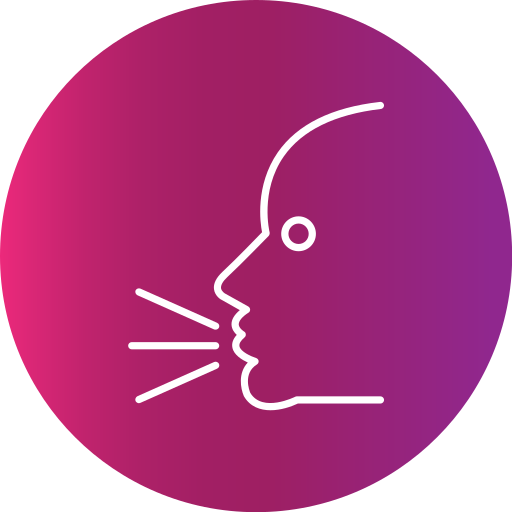
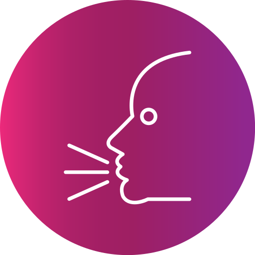

 Speaks: Portuguese and English
 Speaks: Portuguese and English
I'm a proactive person and determined. I'm always looking for professional improvement and, because of that, I'm always studying and learning. I've an adventurous spirit and I don't like to be accommodated. I'm not afraid of new challenges and taking risks. I'm a little nerd and I like to travel, nature and love animals. After I've worked as a lawyer, My first opportunity to be in technology's world, my passion, was a customer success. And it was the beginning of my journey. Later, I've had the opportunity to work as a Product Owner and I can say that I am discovering myself as a professional.
February/24 - Current (remote job)
September/22 - February/24 (remote job)
February/21 - September/22 (remote job)
June/19 - January/21
August/18 - May/19
© Camila da Rosa. All rights reserved.